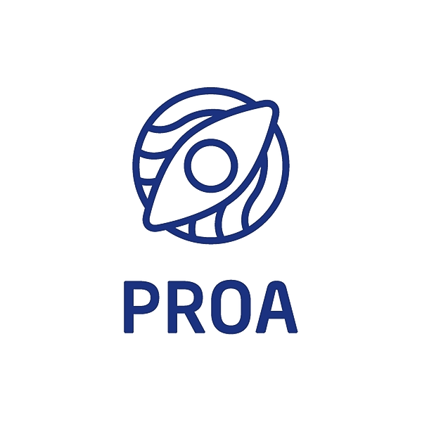

O Instituto ajuda esses jovens a se tornarem protagonistas de suas próprias histórias e a ingressarem no mercado de trabalho.
Os alunos aprendem a se preparar para ser um Desenvolvedor Java Júnior e têm aulas de Programação Java, Comportamental, Cultural, Projeto Profissional, Comunicação e Vivências.
Já a Plataforma PROA é voltada para quem quer conquistar o seu primeiro emprego.
O curso tem duração de 3 meses e os alunos aprendem a se preparar para o mercado de trabalho com módulos como Autoconhecimento, Planejamento de Carreira, Projeto Profissional, Raciocínio Lógico e Comunicação.
Os cursos são 100% gratuitos e estão disponíveis para jovens entre 17 e 22 anos que estejam cursando ou tenham concluído o 3º ano do Ensino Médio em escola pública. Além disso, os alunos devem morar nos Estados de São Paulo, Rio de Janeiro, Santa Catarina, Rio Grande do Sul, Minas Gerais ou Paraná para participar da Plataforma PROA ou na Grande São Paulo ou no Grande Recife para participar do curso PROPROFISSÃO.
Desde sua fundação, o Instituto PROA já impactou mais de 36.000 jovens e tem obtido resultados impressionantes: 83% dos jovens formados estão empregados, a evasão é de apenas 2% e a presença é de 97%. Além disso, o Instituto tem planos ambiciosos: recentemente chegou ao Rio de Janeiro e tem como meta formar 400.000 jovens para o mercado de trabalho em todo o Brasil.
Assista abaixo como se inscrever no instituto